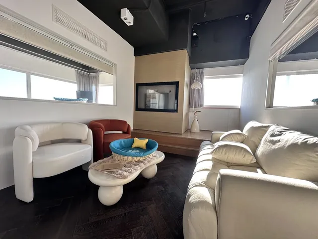
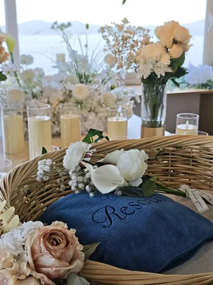
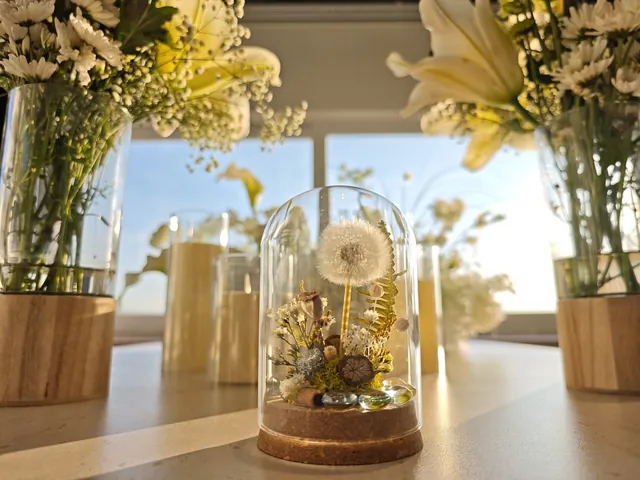
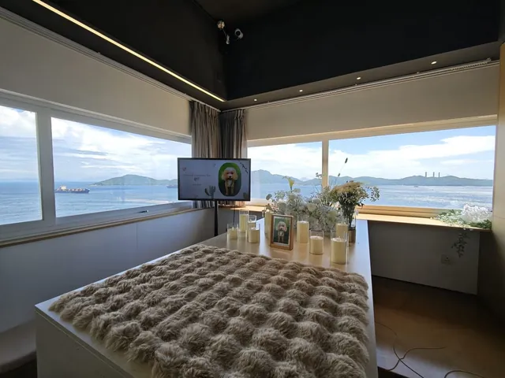
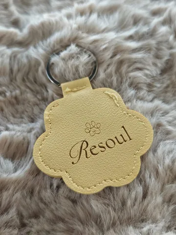
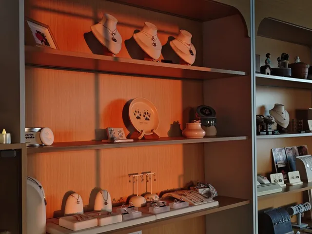
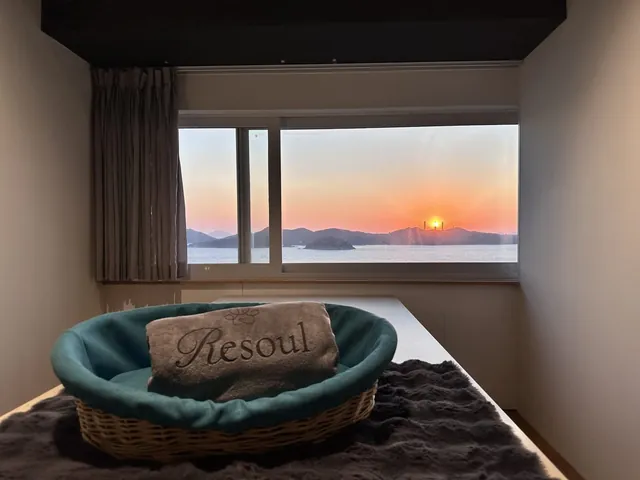

From final care to the days after goodbye
當每次告別都值得珍惜，
選擇溫暖的陪伴與關懷。
當寵物離開我們的生命時，每一刻都值得被好好珍惜。寵物善終不僅是一項服務，更是對毛孩一生的最後致敬。RESOUL 已陪伴超過 100 個家庭，提供專業的寵物火化、溫馨的寵物喪禮服務與寵物殯儀服務，致力於將悲傷轉化為美好的回憶。
無論您需要 24/7 緊急接送、私密告別空間，還是紀念性的火化儀式，我們都在這裡陪伴您度過這段難熬的時光。為了讓愛永久流傳，我們亦提供多款精緻的寵物紀念品及骨灰飾物，讓這份連結跨越時空。
每一場寵物善終的儀式與每一件紀念品，都是對您與寵物共同故事的永恆紀念——讓愛與尊重成為每次告別的核心。







你不需要現在
便懂得所有安排。
告訴我們毛孩目前的情況，我們會先聆聽，再協助你整理下一步。沒有催促，也沒有預設答案。
在 Resoul，離別不是終點，而是永恆的致敬——是對那些歡笑、陪伴與無私之愛的溫柔延續。
願你想起牠時，心底先泛起微笑，才落下淚水。